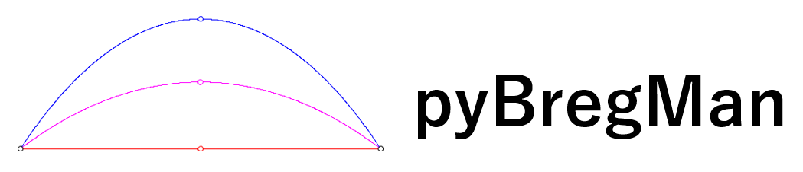
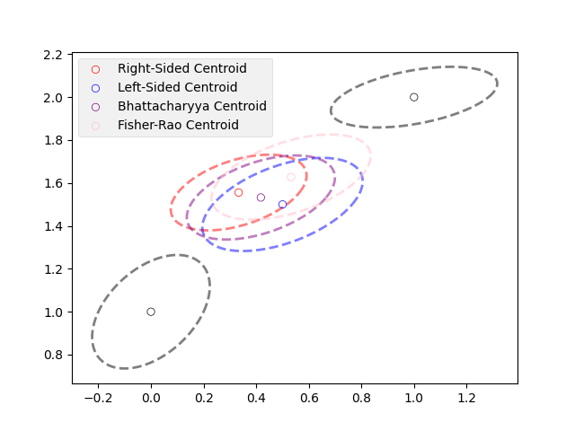

pyBregMan Python package

pyBregMan: A Python package for Bregman Manifolds
@Manual{pyBregMan-2024,
title = {{pyBregMan: A Python package for Bregman Manifolds}},
author = {Frank Nielsen and Alexander Soen},
address = {Tokyo, Japan},
year = {2024},
url = {https://franknielsen.github.io/pyBregMan/index.html},
}
Contact: Frank Nielsen and Alexander Soen

Sided Bregman centroids and Jensen centroids
|

Chernoff point (Chernoff information)
|

Jensen-Shannon centroid of discrete distributions (histograms)
|

Inductive arithmetic-harmonic-mean
converging to the geometric matrix mean
|

Various centroids for bivariate normal distributions
|
|
Last updated, June 2024.